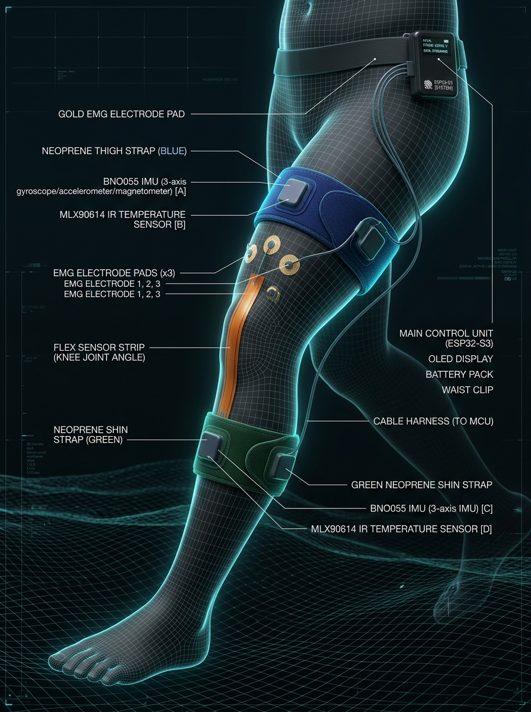

A hybrid screening system that fuses automated sensor data with manual clinical findings to assist doctors in detecting osteoarthritis risk — 2–5 years before symptoms appear.

Accuracy increases as more manual clinical data is layered onto sensor readings — from village screening to specialist consultation.
ASHA worker, no doctor, no lab, no imaging
Doctor present at Primary Health Centre
Specialist with full diagnostic access
The AI fusion model combines 4 automated sensor channels with 12 manual clinical features for a multi-modal composite risk assessment.
Moderate Risk
Inflammatory phenotype (TMII 0.62)
KL 1–2 estimated · Refer for imaging
Sensor readings stream automatically while the clinician fills in manual clinical findings — both feed into the AI risk model in real-time.
Automated + manual data captured simultaneously during the same 12-minute session.
Demographics + history via app
2 minKOOS-12 in local language
4 minColor-coded strap attachment
2 min10 steps — all 7 modalities
2 minDoctor inputs manual findings
OptionalHybrid risk score + referral
InstantHardware sensors provide quantifiable biomarkers. Clinical input provides context no sensor can capture.
BNO055 IMU ×2 — Antalgic gait & asymmetry
Piezo ×2 — Crepitus Angle Map (Novel)
Flex sensor 4.5″ — Flexion deficit
ADS1292R sEMG — AMI detection (Novel)
MLX90614 IR ×2 — TMII phenotype (Novel)
KOOS-12 + patient demographics + clinical exam
Camera + MediaPipe — Varus/valgus alignment
Benchmarked across cost, sensitivity, speed, and multi-dimensional performance.
Log scale — ₹ per screening episode
KL Grade 0–1 detection rate (%)
Higher = Better (scale 1–5)
Detection rate (%) by Kellgren-Lawrence grade
Simulated real-time waveforms from hardware sensors during a screening session.
Sensor + Clinical Fusion Model
Projected impact: 10,000 screenings/year, 85% detection, 80% compliance.
Cumulative cost at 6,000 screenings/year (₹ Crore)
Minutes per complete screening episode
Per screening episode comparison
of hospital screening's environmental footprint
Phased rollout across all 8 NER states before national expansion.
All components off-the-shelf, India-available, TRL 7–9.
| Component | Part Number | Qty | Cost (₹) | TRL |
|---|---|---|---|---|
| MCU (AI + BLE + WiFi) | ESP32-S3-WROOM-1 | 1 | 550 | 9 |
| 9-axis IMU | BNO055 breakout | 2 | 2,400 | 9 |
| Piezo contact microphone | 35mm brass disc | 2 | 60 | 9 |
| Piezo amplifier (dual) | TL072CP op-amp | 1 | 40 | 9 |
| Flex sensor | Spectra Symbol 4.5″ | 1 | 600 | 9 |
| EMG analog front-end | ADS1292R module | 1 | 650 | 9 |
| IR thermopile | MLX90614ESF-BAA | 2 | 500 | 9 |
| OLED display | SSD1306 0.96″ I²C | 1 | 200 | 9 |
| Li-Po battery | 3.7V 1200mAh | 1 | 250 | 9 |
| USB-C charger IC | TP4056 + DW01A | 1 | 60 | 9 |
| LDO voltage regulator | HT7333 (3.3V) | 1 | 15 | 9 |
| Passive components | R, C, diodes | — | 100 | 9 |
| PCB + assembly | Custom 2-layer PCBA | 1 | 500 | 8 |
| Enclosure | 3D-printed SLS nylon | 1 | 300 | 8 |
| Straps, cables | Neoprene + JST-PH | 1 set | 400 | 9 |
| Subtotal: Sensor Device | 6,625 | |||
| Carry bag + spares | — | 1 | 500 | — |
| Total Kit Cost | 7,125 | |||
84% reduction at 10,000+ volume